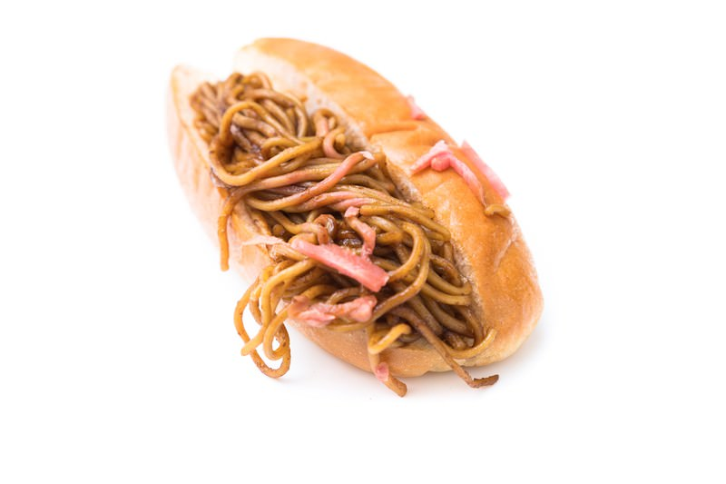
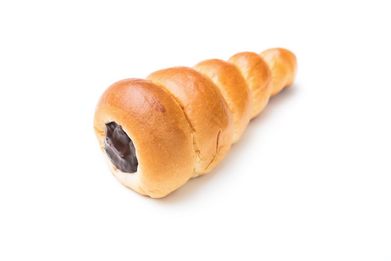

本日のおすすめのパン
グランドメニュー

クロワッサン
発酵バターを何層にも丁寧に折り込み、高温で一気に焼き上げました。
パリッと軽やかな食感と、噛むほどに広がる芳醇なバターの香りをお楽しみいただける一品です。

焼きそばパン
お店特製の焼きそばを挟んだ昔懐かしい焼きそばパンです。
幅広い世代のお客様から好評な人気商品です。

チョココロネ
チョコレートクリームがたっぷりと入った王道なチョココロネです。
昼食にはもちろんのこと、お子様の3時のおやつにもおすすめな商品です。
期間限定のパン

エッグパン・ツナパン
濃厚でまろやかな「たまごサラダ」と、旨みたっぷりの「ツナマヨ」を一度に味わえる満足感抜群のオープンサンドです。ランチやブランチにおすすめです。

ホットサンド
こんがり美しい焼き目をつけたサクサクのトーストに、みずみずしいトマトとシャキシャキのレタスをサンドしました。
軽やかでありながら食べ応えのある一品です。